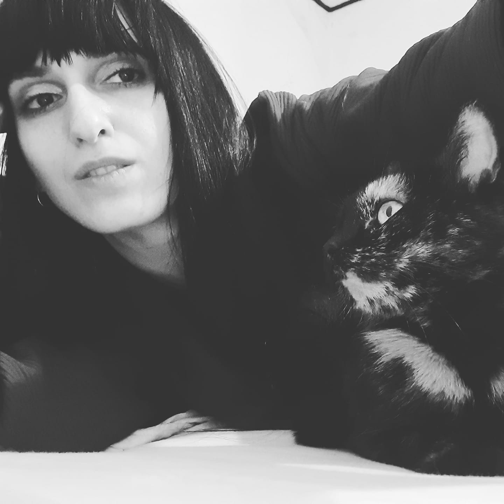
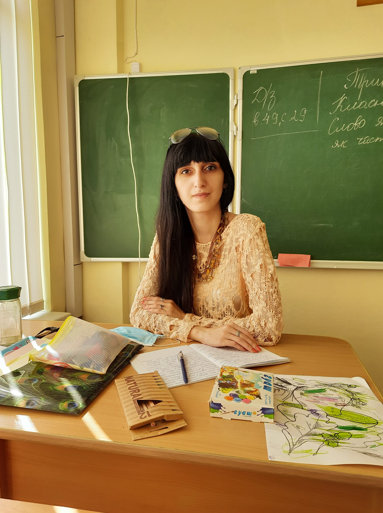
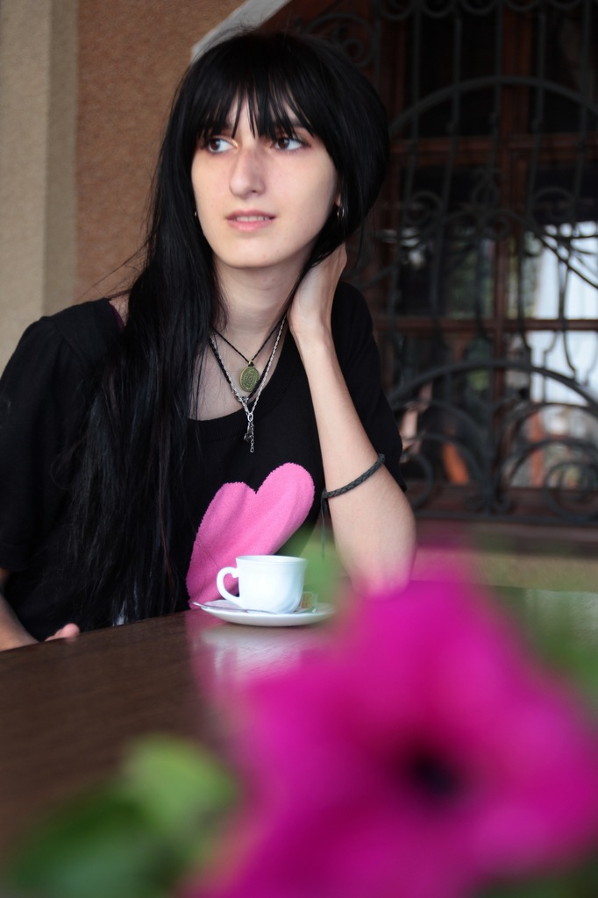

 Народилася 21 лютого 1993 року у місті Калуш, Івано-Франківського району. В 2000 році пішла у перший клас ЗОШ №7 м. Калуш, нині Ліцей №7. З дитинства була тяга до малювання, тому у позаурочний час відвідувала Центр худлжньої творчості. В більш старшому віці - часні уроки у художниці Чаборик Тетяни. Змалку мріяла стати вчителем, пізніше дизайнером одягу. З 2007 року почала писати перші вірші і виношувати ідеї для повноцінної книги. Перша частина "В сутінках..." була написана у 2012 році, а в 2017 вперше опублікована на Літнеті.
 В 2010 році вступила у Прикарпатський університет ім. В. Стефаника і здобула кваліфікацію спеціаліста за напрямком дизайн. В 2015 році ще раз вступила у Прикарпатський університет і здобула кваліфікацію спеціаліста за напрямком "викладач історії". З 2017 року по теперішній час праццюю в Навчально-реабілітаційному центрі Івано-Франківської міської ради. Також, з 2023 рокупрацюю в приватній школі "Янголи поруч" вчителем малювання.
Короткі відомості

Профіль
Вчитель, Письменник, Художник
ПІБ
Кузь Тетяна Мирославівна
Місто
Калуш
Освіта
Університет ім. В. Стефаника